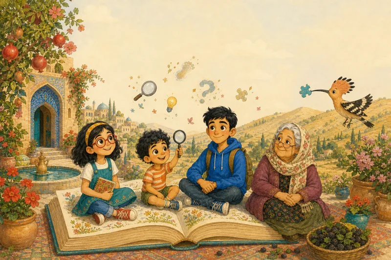
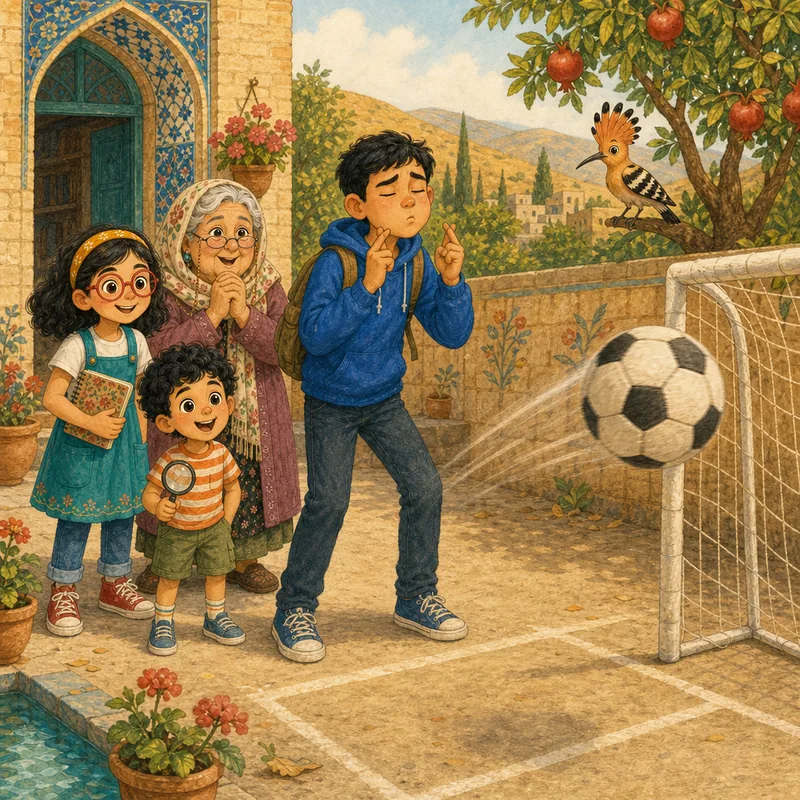
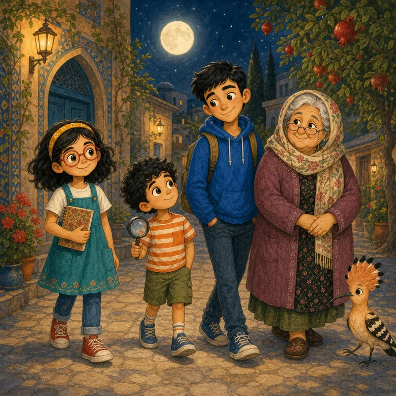
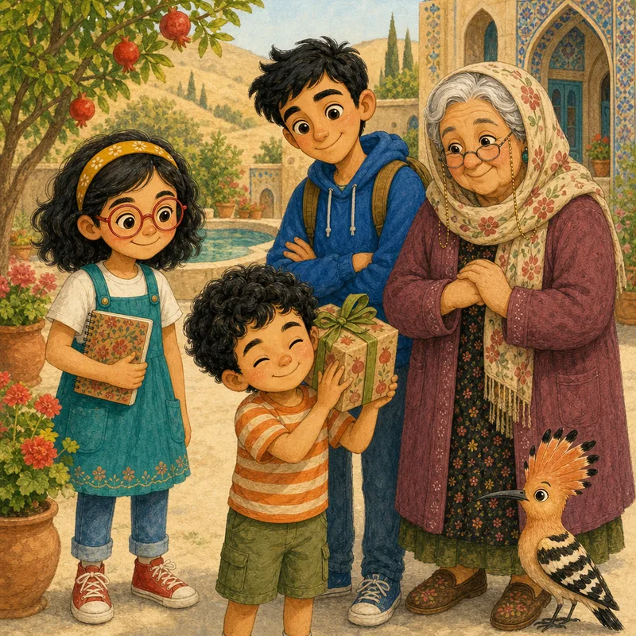
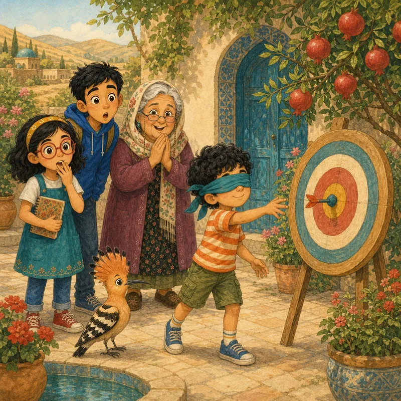
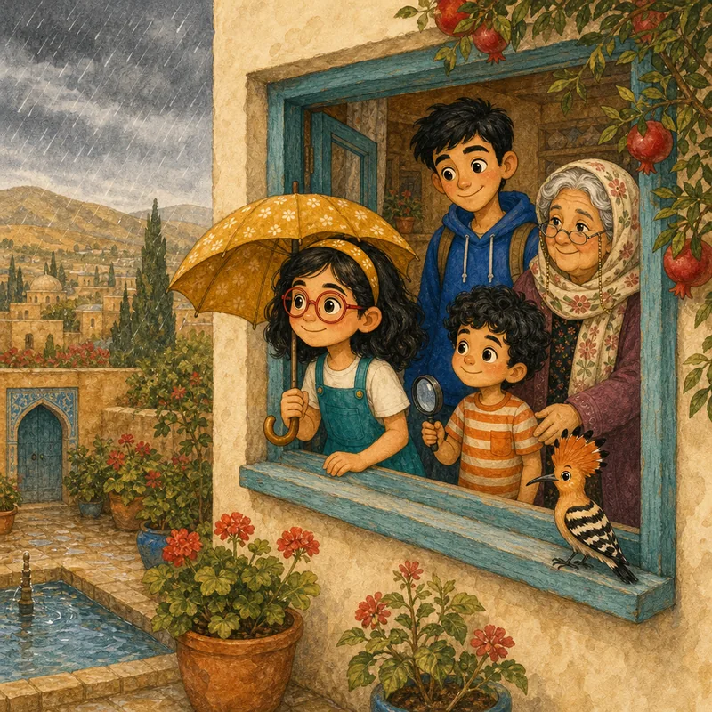
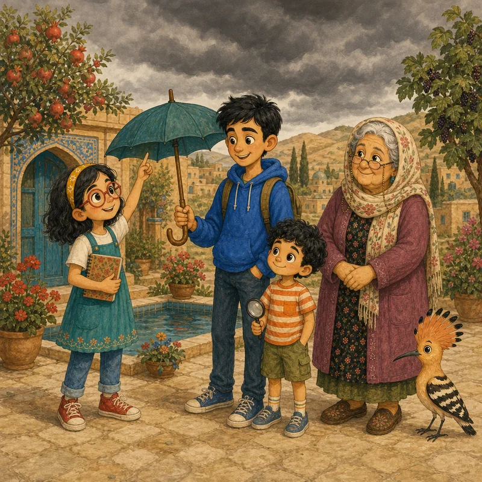
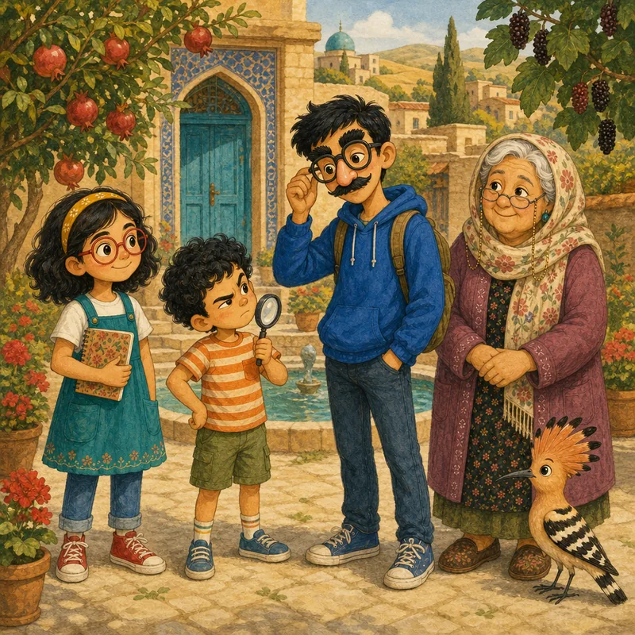
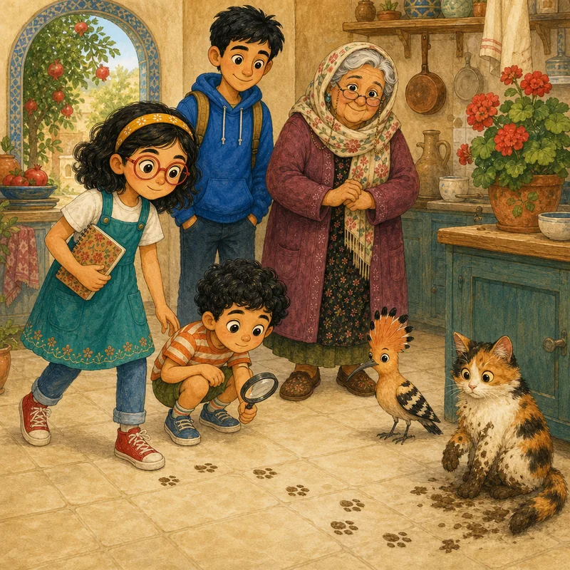

واژهنامهٔ تصویری
همهٔ واژههای فکری درسها، به زبانِ ساده.
ادعا
ادعا چیزی است که یک نفر میگوید درست است.

امید
امید یعنی بخواهی چیزی درست باشد. ولی خواستن، آن را درست نمیکند.
انگورِ ترش
وقتی چیزی را نمیتوانی به دست بیاوری و میگویی نمیخواستمش.

باور
باور کردن یعنی فکر کنی چیزی درست است. باور میتواند درست یا غلط باشد.
بهانه
بهانه شبیهِ دلیل است، ولی واقعاً نشان نمیدهد ادعا درست است.

حدس
حدس جوابی است که میدهی وقتی هنوز دلیلِ خوبی نداری.

حدسِ خوششانس
حدسِ خوششانس درست از آب درمیآید، ولی فقط از شانس. درست بودنِ شانسی، دانستن نیست.

دانستن
چیزی را دانستن یعنی دربارهاش درست بگویی، آن هم با یک دلیلِ خوب، نه از شانس.

دلیل
دلیل چیزی است که باعث میشود فکری بکنی: همان «چون»ِ پشتِ حرفت.
دلیلتراشی
پیدا کردنِ دلیل برای چیزی که از قبل میخواهیم درست باشد.

قلابی
سرنخِ قلابی سرنخی است که درست به نظر میرسد ولی نیست، مثلِ پاهای سفیدشدهٔ گرگ.

نشانه
نشانه سرنخی است که کمک میکند بفهمی چیزی درست است یا نه.